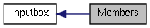

|
Cream-Browser unstable
|
|
Cream-Browser unstable
|
|  |
Functions | |
| static void | Inputbox::inputbox_check_mode (Inputbox *obj) |
| static void inputbox_check_mode | ( | Inputbox * | obj | ) | [private] |
| obj | A Inputbox object. |
Modify the Cream-Browser's state (see CreamMode) according to the inputbox's content.
If the text begin with '?' or '/', set the state to CREAM_MODE_SEARCH. If the text start with anything else, set the state to CREAM_MODE_COMMAND.
 1.7.4
1.7.4